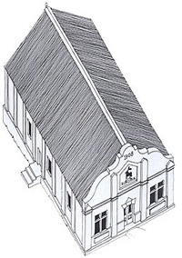

|
home | franco frescura | architecture | urban issues | lectures | graphic work | postal history | historical archive
KEISKAMMAHOEK - The Conservation Study of a Small Settler VillageFranco Frescura HISTORICAL BACKGROUNDKeiskammahoek is a small settler village in the foothills of the Amatola Mountains, located some 50km from King William's Town, at the confluence of the Gxulu and Keiskamma Rivers. It has long been known to local inhabitants as a sheltered and fertile spot and, despite being located in a drought-ridden region, it has never lacked for water. The indigenous name for the area is Qobo Qobo which, loosely translated, means "a fragile thing" but, since 1847, it has also been known as Keiskammahoek. This name, derived from Dutch and Khoikhoi roots means, quite literally, "corner of shining waters". The area was first settled by whites during the 1846-7 border conflict, more popularly known as The War of the Axe, when a British military outpost, generally referred to at the time as "the camp in the mountains", was established there. At the end of hostilities the camp was abandoned by the military, who were replaced soon after, in 1849, by a Scottish missionary, the Rev Robert Niven. He chose it as the site for his mission station, Uniondale, his aim being to preach the gospel among Mfengu and Xhosa clans already residing in the area. The first buildings consisted of little more than a few wattle and daub huts. However this mission was short-lived as the Rev. Niven and his family were forced to flee when their home was burnt down upon the outbreak of further hostilities in 1850.  In 1851, as a direct result of this war, the British re-established a tented camp at Keiskammahoek under the command of Colonel Henry Somerset. In April 1852 a body of Royal Engineers joined the contingent and began the erection of a fortified tower. This was completed in 1855 and named Castle Eyre after Colonel John Eyre of the 73rd Royal Highlanders. In March 1853 the Cape Colonial Government declared the area immediately surrounding Castle Eyre a Royal Crown Reserve with the expressed intent of establishing a permanent village on this site. The first settlers began building homes at Keiskammahoek soon after the end of hostilities in 1853. During the next decade the village's white population rapidly expanded its numbers with the settlement of German legionaries and their families who immigrated to South Africa during 1857 and 1858. A further influx of German settlers brought more families to the region in 1876-7. In about 1858 a Lutheran church was built in the village but this structure proved unsatisfactory and was replaced by a more permanent building during 1877. Several other churches were also built in Keiskammahoek, the Gilead Chapel, consecrated in 1872, being amongst the most notable. THE CONSERVATION STUDYResearch into the architectural heritage of Keiskammahoek was initiated in 1984 as a result of work being conducted at that time towards the development of a Cultural Museum complex for the Ciskei. The project sought to break new ground in the field of museum development in this country in that one of its prime objectives was the generation of economic development in the region. As such the tourist component became incidental to the provision of a wider educational facility which could be used to supplement existing school functions. It thus sought to work within the parameters of the area's cultural and economic realities. It was found that Keiskammahoek served a large rural community with extensive unemployment problems; that it was endowed with a service infrastructure; that it badly needed additional educational facilities; and thus that it offered the best potential for new economic development. As a result it was decided that the larger objectives of the brief would be best served by weaving the functions of a Cultural Centre within the existing social and physical fabric of the village. The concept implied that the settlement as a whole would be subjected to a process of revalidation and conservation, much as one would treat a single building of historical importance. This had a number of major advantages:
THE SURVEYKeiskammahoek consists of some 125 structures of which 48 were identified as being of either architectural or historical merit. This means that a relatively high proportion of the building stock is worthy of preservation and restoration. Their concentration and state of preservation however makes this village an important enclave of colonial architecture. Most of these buildings line the main street, forming a group with a distinct architectural character. A further cluster was also identified around the old mill. A broad range of building types was noted including seven churches, a library, a hotel, shops and a village hall, but the majority are single storied houses ranging from a small pioneer cottage to substantial villas. Their ages were found to vary from late 19th century to the 1920s. Thus a broad representative spectrum of historical architecture may be found within the village. PROBLEMS WITH THE EXISTING FABRICSome buildings, notably the churches, library and village hall, appeared to be disused or under-utilised, and a process of conservation and revalidation would require that new and compatible uses be found for these. Some buildings suffered from structural decay and such elements as verandahs and decorative trims required urgent attention. Other structures were also found to have undergone inappropriate alteration or unsympathetic additions and were thus in need of specialist attention. POTENTIAL FOR CONSERVATIONAlthough many historically important buildings required a degree of restoration, this was not perceived to be unduly expensive, most structures being of a relatively small scale. Particular attention should also be paid to the restoration of the physical environment, especially in such areas as garden walls, trees and plantings. In view of the fact that most structures are currently used for domestic purposes, a policy of land use and building controls should ensure that the dwellings continue to serve their original functions. The potential re-use of larger structures such as the village hall, the library and the various churches, should also be investigated. Some could operate as specialist museums, while others may be revalidated to serve as craft centres. Areas which require special attention include:
IRRELEVANT AND INTRUSIVE BUILDINGSThese may be classified into two categories, the first being those buildings situated away from the historical core and therefore outside the concerns of this survey. The second group consists of those within the core which will need some form of architectural treatment in order to bring them into harmony with their older neighbours. The garage located on the main street is a prime example. This need not necessarily become an expensive exercise. NATURAL LANDSCAPEThe village's existing natural landscaping, principally the lines of trees along the roads, add considerably to its character. This should be preserved and extended. The water canals should also be preserved and maintained. Landscaping should be undertaken to enhance new building developments and diminish the impact of environmentally intrusive structures. LARGER CONSERVATION CONCERNSKeiskammahoek is beautifully situated in attractive natural surroundings, and thus has enormous potential as an overnight stop for tourists. It is proposed that the village be included into an Eastern Province and Ciskei tour package, beginning in Port Elizabeth and ending in East London, which could be added to the popular Garden Route. A rich itinerary could thus be arranged. However it is important that a tarred road linking Keiskammahoek to the King William's Town-Alice road be developed if this route is to be used by coaches. The question of future developments in the village as a growth point needs to be carefully studied, as large and unsympathetic building activity could easily destroy its character and void any restoration work done. The large- scale implementation of small and insensitive changes would similarly affect its fabric. The socio-economic implications of a restoration programme are also in need of serious consideration. The training of local building craftsmen, for example, will create a labour force able to undertake restoration work, thus upgrading local building skills and creating new job opportunities. RECOMMENDATIONSThe village of Keiskammahoek has a rich architectural and historical heritage which has received little publicity to date. Its potential for tourism should therefore be recognised and a programme of restoration and preservation embarked upon as a matter of urgency. To this end, a more detailed inspection of each building identified during the course of this survey should be undertaken, principally for budgeting purposes. The town and its environment should also be declared a special conservation area so that all decisions regarding its fabric may be made by a co-ordinating body of experts and local citizens. A comprehensive study should also be commissioned to investigate the socio-economic implications and possibilities of a restoration programme. A major element of such a brief must be the investigation and formulation of future land use strategies for the village as a whole. In view of the various activities which may, at some future date, center upon this area, it is important that a planning strategy be developed in order to provide the various bodies with a larger framework within which a number of different activities may take place. CONCLUSIONSShortly before Ciskeian independence the village of Keiskammahoek was on the point of being declared a national monument. However, since its incorporation under this new regional authority, many of its buildings have been sold to the government who, lacking sufficient data and architectural expertise, has allowed them to deteriorate. In many cases dwellings have been let to civil servants, mostly policemen, who have vandalised the structures extensively. As a result the village's buildings are undergoing extensive changes almost daily. Timber sash windows are being replaced with steel-framed units, fretted timber fascias with asbestos panels and yellowwood floors with cement screed. Sadly this once picturesque settlement seems to be destined for the same fate which has befallen so many of southern Africa's small towns and villages, where insensitive modernisation has created faceless centres devoid of architectural character. However, before the conservative-minded reader passes judgment upon its new owners, let him remember that the plunder of Keiskammahoek was begun by its white inhabitants before they left in 1981. The library's stock of books was distributed among the locals, the hotel's antique collection sold to affluent socialites from Cape Town and Johannesburg, the gravestones plundered by curio hunters and the cast-iron trims removed to private residences in King William's Town. The only reason why the military sabres remain atop the village hall and HMS Thunderer's cannon has kept its place before the village school is because the former were found to be fakes and the latter proved too heavy to be moved. ADDENDUMThe final chapter of this research saga was written in February 1985 when, contrary to the recommendations of its appointed experts, the Ciskei National Tourist Office (CINTO), decided to locate the museum project at Thaba ka Ndoda, a site remote from all population centres and with little chance of economic development. In view of the threat under which the village of Keiskammahoek now found itself, architectural students from the University of Port Elizabeth descended upon this centre in April and May 1985 and measured up 39 structures considered to be of major architectural and historical importance. This was not done out of any sense of altruism but rather in the knowledge that most of these buildings were in the process of being lost through neglect and careless alteration and should be recorded for the sake of future generations. Sadly it must now be reported that since that time the old gun redoubt has also undergone extensive and wanton vandalisation at the hands of the Ciskei Police, its stone walls breached and its yellowwood floors burnt as firewood. Also, in about 1993, the Drill Hall was burnt down by vagrants, Ballantine’s Mill was vandalized and partly destroyed by fire, probably to mask the fact that much of its old stock of yellowwood had been stolen, and most of the historically relevant domestic structures had been altered beyond restoration. POSTSCRIPTNumerous people have assisted in this project. Foremost amongst them was Professor Dennis Radford who, as colleague and friend, gave much valuable advice and took part in the early stages of conservation research. The contributions of Beverley Peters, Town Clerk of Keiskammahoek, Denver Webb, Historical Curator of the Kaffrarian Museum, and Lesley-Anne Morton are also gratefully acknowledged. This paper was originally published in Restorica, No 23, October 1988 (43-45), under the title Keiskammahoek: a Small Settler Village. ILLUSTRATIONS
Copyright @ francofrescura.co.za
|